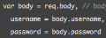

-
These are written as EQUALS in the arguments. So...
var link = function(height = 50, color = 'red', url = 'http://example.com') { ... } -
Instead of sticking the variable inside a 'string sandwich', you can use tic marks as quotes. e.g. let s = `Hello ${my-dude}.`
-
The tic mark "`" can do multi-line quotes.
-
-
In React we can add a partial state to the setState() function. We do it succinctly:
this.setState({
[name]: value
}); -
You can make a class now. React uses class. Things in React can't be stateful unless they are a CLASS.
-
ES5 version:
ES6 version: var {username, password} = req.body
-
-
I call this "The Chopper". Feed in an IMPLIED property of the object and, with the same name, it pops out as an available argument. Example syntax: const {foo} = this.props
const {bar} = this.state
where foo and bar were properties of those rightside objects. See p. 20 in Pragmatic Programmer React by Fischer! -
Fat arrow functions with one ARG can look like this in React: item => ELEMENT foo {item.toUpperCase()} bar /ELEMENT
-
Very OO!
methods have no "function" keyword! Typical methods have render(), constructor(), and constructor(props) followed by super(props) -
Outside of React, the constructor might look like CONSTRUCTOR(first, last){this.first = first; this.last = last}
And then call with:
const author1 = new Person("rachel", "carson"); -
Cannot reassign CONST if a primitive. But CAN add properties til the sun goes down.
Make CONST your default mode. It shows your commitment to immutability. :^) -
In mattis elit vitae odio posuere, nec maximus massa varius. Suspendisse varius volutpat mattis. Vestibulum id magna est.